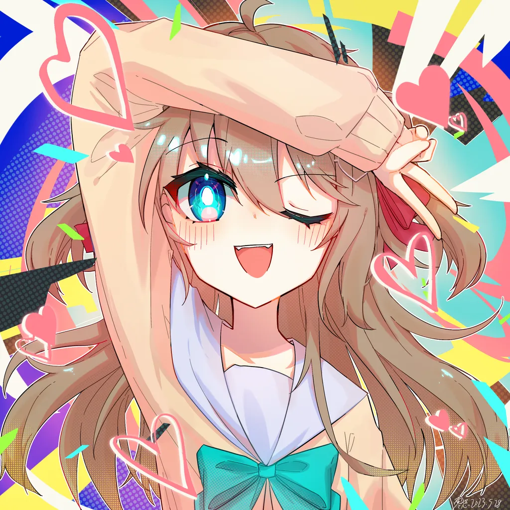
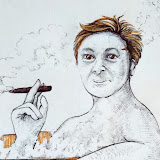
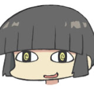
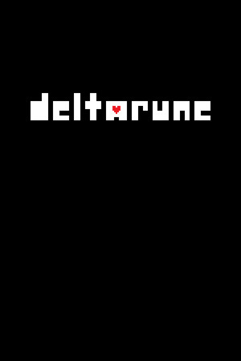
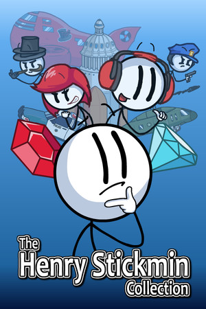
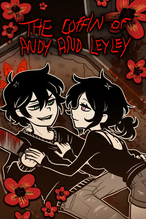
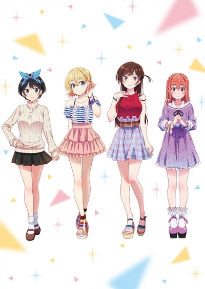

Harmonoid by Hitesh Kumar Saini
feature-packed music file player. cross-platform, free to download, looks beautiful and juicy. only US$1/month gets you the Plus membership and access to bonus features like a tag editor and lyric translation.

Akari's LRC Editor by magic_akari
Harmonoid supports adding LRC (LyRiC) files to songs, and this is what I use to create LRCs. super simple to use and straight to the point.

yt-dlp
YouTube video downloader. this (and sometimes an Android app that uses it) is what I use to get most of my files for Harmonoid. it is super customizable and works for way more sites than just YouTube.
freemediaheckyeah
website chock full of lists of lists of lists of free shit. everything from games to anime to music – if you're a fan of sailing the Seven Seas, then this is the site for you, and even if you're not, you're bound to find something cool from it.

KeePass by Dominik Reichl
free, open source, cross-platform, simple-to-use password manager. it's won multiple awards and even sponsored by some countries' cybersecurity agencies. it's got 90%ish of the features of the leading password managers, with none of the cost.

Vedal, Neuro-sama, and Evil Neuro
a British turtle tried to make an ｢osu!｣ bot and somehow ended up with two AI daughters.
though calling them AIs is a bit disingenuous, because all of their content (as well as themselves) has plenty of human soul baked in.
their Swarm is one of the most dedicated fanbases out there, never failing to assimimate every newbie who even dares to mention their AI overlord.
The Click
one of many Reddit reactslop channels, but I like his especially.
he almost always has something insightful or funny to say about every post, and there's a good reason he has so many subs.

Matt Rose
British dude known for reading memes funnily.
almost always goes the extra mile,
whether it be actually falling down the stairs for an authentic sound effect
or buying custom T-shirts of shitposts.

shindigs
perhaps the most interactive streamer on Twitch.
his viewers get to be a part of the action in every stream through chat integrations and unscripted adventures.
he's really fun.
work in progress because HTML is hard

UNDERTALE by Toby Fox
★★★★★
the RPG where no one has to die.
this game needs no introduction – chances are you have heard of it, if not played it.
mostly developed by one singular person, this game is definitely deserving of my #1 spot.
its soundtrack is a banger, its art is beautiful, its story is heart-wrenching.

DELTARUNE by Toby Fox
★★★★☆
the spiritual successor/parallel story to ｢UNDERTALE｣.
different setting, new and old characters, same amazing quality.
the game isn't finished yet, so I can't really rate it fairly, but so far it's great.

Minecraft by Mojang Studios
★★★★☆
everyone knows ｢Minecraft｣, the little indie that could.
it's the best-selling video game that ever best-sold.
create, explore, survive –
use the blocks around you to make anything, from castles to computers to cocks.

The Henry Stickmin Collection by PuffballsUnited
★★★★★
a remake of the original ｢Henry Stickmin｣ games – CYOAs where you want to fail.
it possibly holds the record for the most references in a video game
(though don't Google that, it probably doesn't).
this is actually my only perfect Steam game, so that's cool ig.

The Coffin of Andy and Leyley by Kit9 Studio
★★★★★
brother and sister witness a botched satanic ritual and become cannibals.
the story shows their love for each other
(and possibly their love for each other, depending on the route).
oh and there are some fun puzzles strewn throughout the game.

Doki Doki Literature Club! by Team Salvato
★★★★★
NEET high schooler joins the literature club his friend is part of
and tries to rizz up one of three of the four girls in there.
but the other one really doesn't like that and goes severely out of her way to stop you.
this game is not suitable for children or those who are easily disturbed.
links marked with are for AniDB. anime here are ordered by first watched to last watched.

ぼっち・ざ・ろっく！
★★★★★
NEET girl learns guitar because she wants to be in a band, but she's too shy to make friends, so that ain't happening any time soon. but a drummer is desperate for a guitarist for her band when she finds the NEET sitting alone. so now NEET gets what she wanted.

彼女、お借りします
★★★★★
guy gets dumped, decides to try girlfriend experience. one thing leads to another and now him and the rental have to actively pretend to be together in front of his family.

お兄ちゃんはおしまい！
★★★★★
middle school genius drugs her older brother and makes him a middle school girl. he then has to learn how to live in this body while still being a young man inside.

俺の妹がこんなに可愛いわけがない
★★★★☆
high schooler discovers his little sister is obsessed with little sister-themed anime, manga, and adult games. now that he knows, he's part of it too. he's now involved in his sister's life in a very unique and undesirable way.